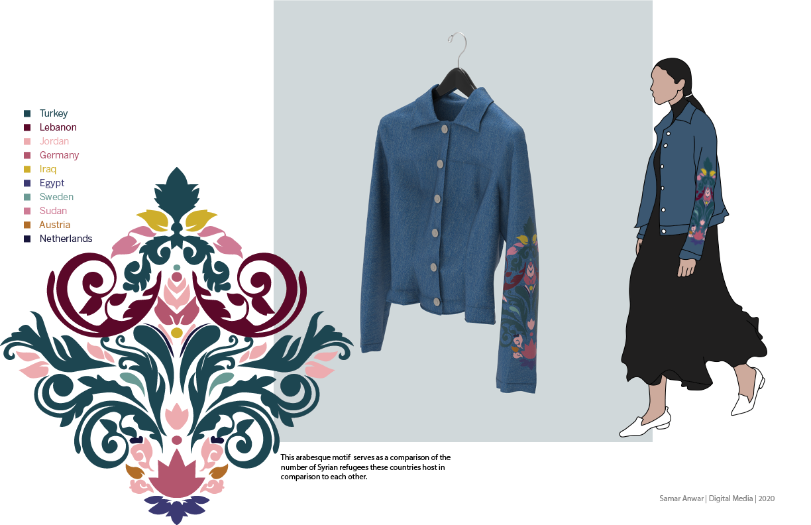

Inspiring fashion
Patterns and data visualization designed for a greater cause.

Movement uses patterns and data visualization displayed on the global platform of fashion with an aim to inspire the wearer as well as the viewer and generate enough momentum to start a movement for action.
Fashion is a global and highly influential platform. Through fashion week, social media influencers, and the music industry, it is apparent that fashion can be used as a way to flaunt social status. But why not use this platform to generate movement towards social awareness and action instead, especially, since an individual’s dressed body can become a tool for political and social discourse? This influence is clearly witnessed through Instagram. Around “200 millions users follow at least one fashion account.” Also, the hashtag #fashion is mentioned 13 million times a month (Wilberg). Consider how many individuals, how many clothes, and how many views all related to fashion that really is. “As long as people wear clothes and accessories, they will consciously or unconsciously influence each other by the way they dress”(Donaldson). Undoubtedly, using this platform to bring social and political change would be effective.
The cause this project focuses on is the Syrian refugee crisis. With a population of 22 million, 5.56 million are now refugees and around 6 million are displaced. That’s more than half of the population on the run (UNHCR). This is a prime example of a crisis that has been ongoing since 2011 and efforts are still lacking to alleviate the struggles. So, what can be done to address this conflict? Most importantly, what would generate enough momentum that could eventually result in a movement that leads to action?
Movement uses refugee population data to create aesthetically pleasing patterns to be displayed on garments meant to invite conversation and inspire the viewer and wear to take action. As the project advances, these pieces of clothing would make it to large platforms like fashion runways and social media like Instagram. The patterns would expand to incorporate personal refugee stories gathered through platforms where refugees document their own experiences to better connect the wearer on an individual level. Further, the company distributing the clothing would be a joint fashion label with a non-profit that actively works to support the cause through relief efforts. Ultimately, the way you dress has power, so rather than dressing to flaunt or impress, why not dress to progress as a global society?
How Social Media and its Influencers are Driving Fashion by Autumn Wilberg